GOV02 — Driving Licence Online Renew Kaise Karein?
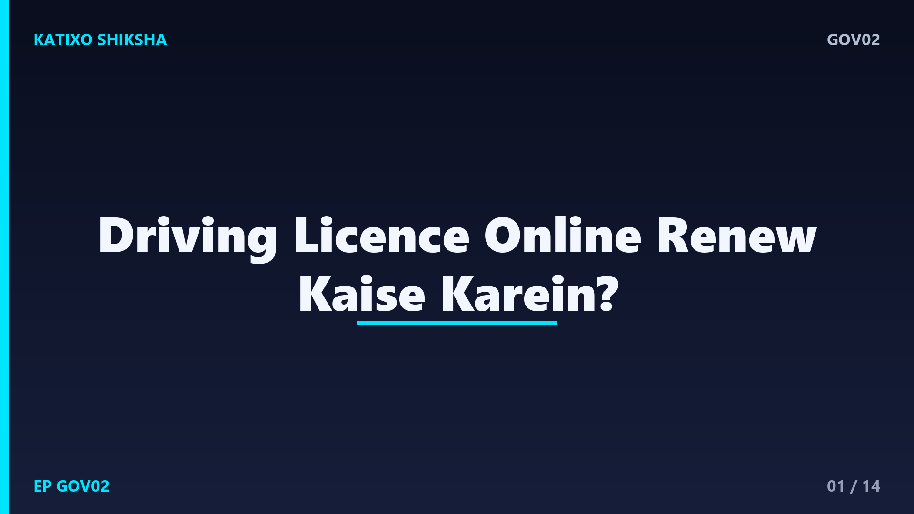
Slide 1दोस्तों, मान लीजिए आप गाड़ी निकाल रहे हैं और अचानक याद आता है कि आपका Driving Licence तो expire हो चुका है। अब expired licence पर गाड़ी चलाना गैरकानूनी है और भारी challan भी कट सकता है। बहुत लोग सोचते हैं कि renewal के लिए RTO के चक्कर लगाने पड़ेंगे या किसी agent को मोटी fees देनी पड़ेगी। पर सच ये है कि आप घर बैठे, official Parivahan portal से खुद online DL renew कर सकते हैं। नमस्ते, आपका स्वागत है Katixo KhojLab में। आज हम आसान Hinglish में step-by-step समझेंगे कि Driving Licence online कैसे renew करते हैं। चलिए शुरू करते हैं।
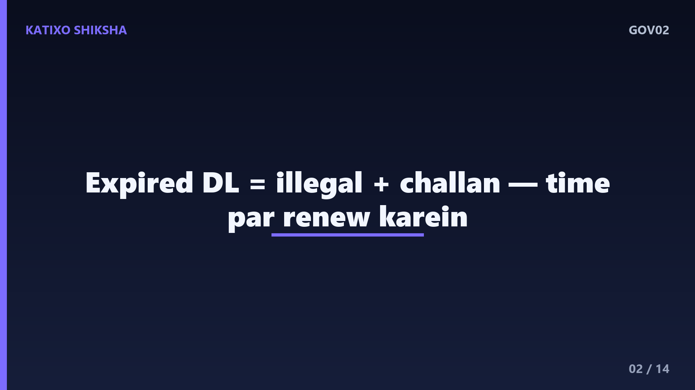
Slide 2सबसे पहले समझिए renewal क्यों ज़रूरी है। दोस्तों, हर Driving Licence की एक validity होती है, और expire होने के बाद उस पर गाड़ी चलाना कानूनन गलत है। आम तौर पर licence expire होने से पहले या उसके कुछ समय बाद तक आप बिना दोबारा test दिए renew करा सकते हैं। अगर बहुत देर हो जाए, तो कुछ राज्यों में दोबारा test देना पड़ सकता है या extra late fees लगती है। इसलिए expiry date आते ही renewal कर लेना सबसे समझदारी है। समय पर renew कराने से जुर्माने और परेशानी, दोनों से बच जाते हैं।
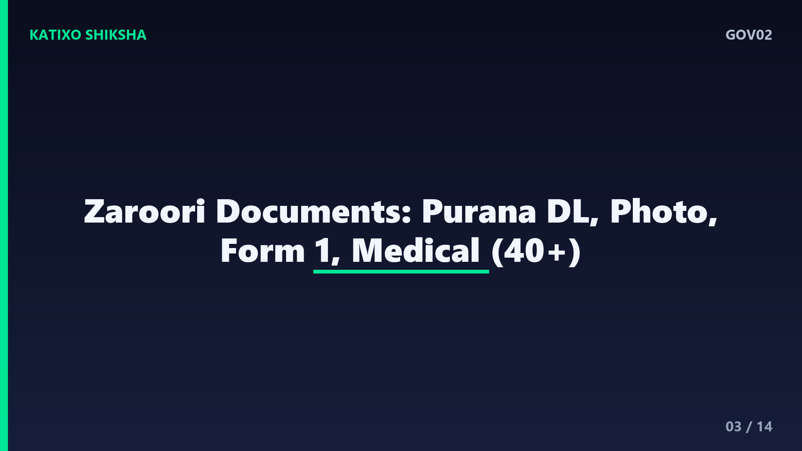
Slide 3अब renewal से पहले documents तैयार कर लीजिए। आपको चाहिए आपका मौजूदा Driving Licence यानी पुराना DL नंबर, एक recent passport size photo, और signature की scan copy। साथ में address proof और age proof, जैसे Aadhaar card, काम आते हैं। एक बहुत ज़रूरी document है Form 1, यानी self-declaration of physical fitness। और अगर आपकी उम्र चालीस साल से ज़्यादा है या आप commercial licence renew करा रहे हैं, तो आपको registered doctor से Form 1A, यानी medical certificate भी चाहिए। दोस्तों, ये सब पहले से ready रखें तो process तेज़ हो जाती है।
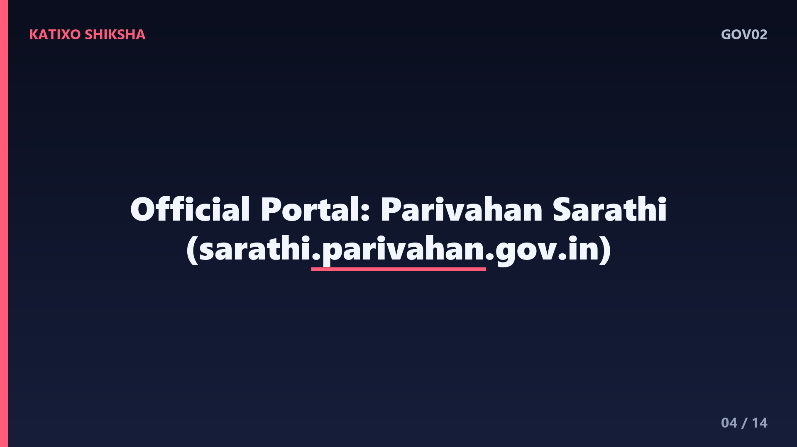
Slide 4अब जानिए apply कहाँ करना है। दोस्तों, Driving Licence से जुड़े सारे काम के लिए official portal है Parivahan Sarathi, जो Ministry of Road Transport and Highways का है। इसी website पर Driving Licence से जुड़ी सारी services मिलती हैं। बहुत ज़रूरी बात, हमेशा official Parivahan Sarathi website ही खोलें। Search में आने वाले किसी अनजान link, fake site या agent के portal पर अपनी details और पैसे कभी ना डालें, वरना धोखा हो सकता है। सही और सिर्फ official website से ही काम करें।
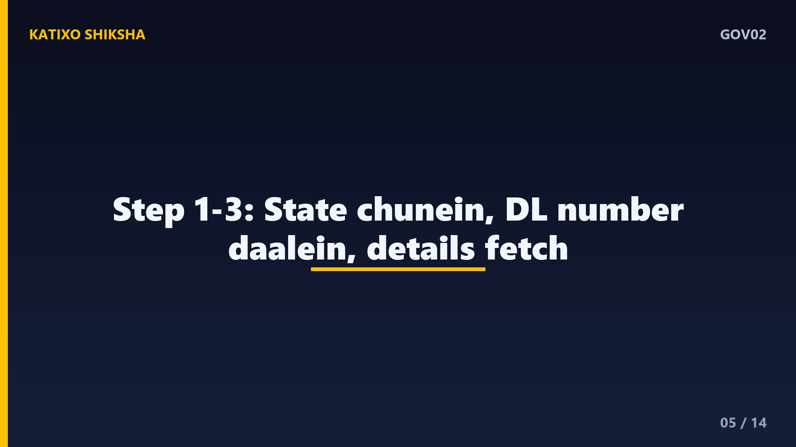
Slide 5अब step-by-step शुरू करते हैं। पहला step, Parivahan Sarathi portal खोलिए और अपना State चुनिए, क्योंकि हर राज्य का RTO अलग होता है। दूसरा step, Driving Licence services के section में जाकर Apply for DL Renewal का option चुनें। तीसरा step, अपना मौजूदा Driving Licence number और date of birth डालकर अपनी details fetch करें। दोस्तों, screen पर आई हुई details, जैसे नाम और address, एक बार ध्यान से check कर लें कि सब सही है। गलत details आगे चलकर बड़ी दिक्कत बनती हैं।
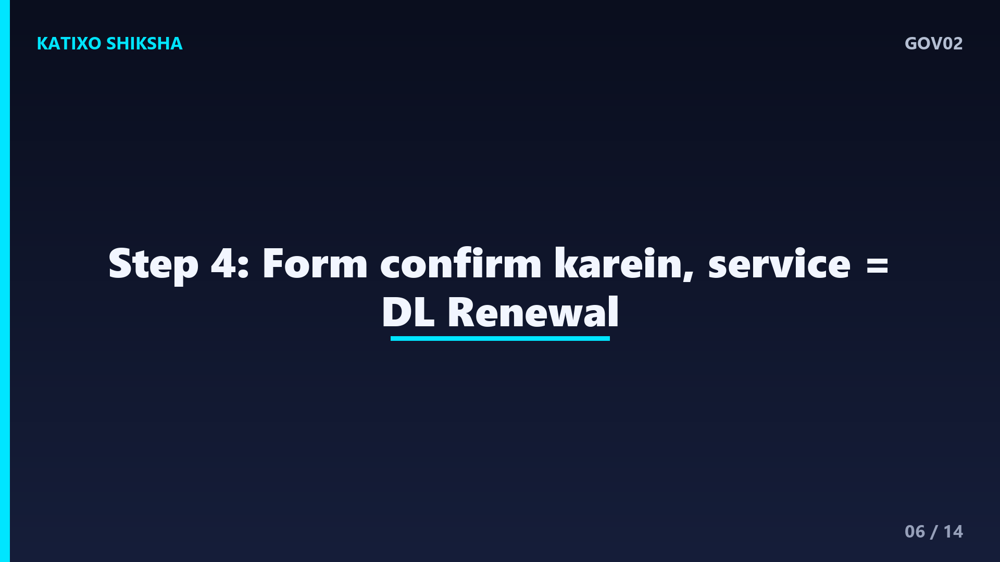
Slide 6अब अगला step, application form भरना। दोस्तों, system आपकी पुरानी details अपने आप दिखा देता है, आपको बस confirm करना है और जहाँ ज़रूरत हो वहाँ update करना है, जैसे नया address। फिर आपको service चुननी है, यानी Renewal of Driving Licence। अगर इसी समय आप address change जैसा कोई और काम भी करना चाहें, तो वो भी select कर सकते हैं। हर field documents के हिसाब से ही भरें। एक बार पूरा form सही से भरने के बाद आगे बढ़ें, ताकि बाद में correction की ज़रूरत ना पड़े।
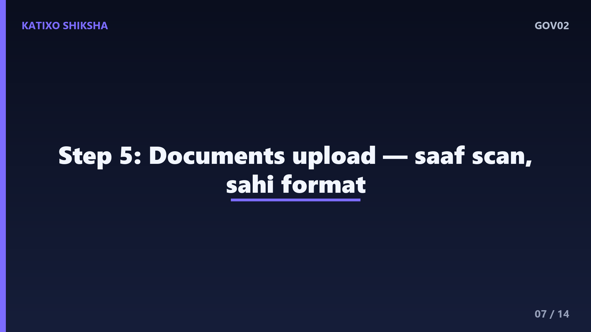
Slide 7अब आता है documents और photo का step। दोस्तों, portal आपसे ज़रूरी documents upload करने को कहेगा, जैसे Form 1 self-declaration, और उम्र या commercial case में Form 1A medical certificate। साथ ही कुछ राज्यों में आपको अपनी photo और signature भी upload करने पड़ते हैं। ध्यान रहे, सारे documents साफ और सही format में scan किए हों, धुंधली या कटी हुई copy reject हो सकती है। सही file size और type का भी ध्यान रखें, जो portal पर बताया गया हो। साफ documents से आपकी application जल्दी आगे बढ़ती है।
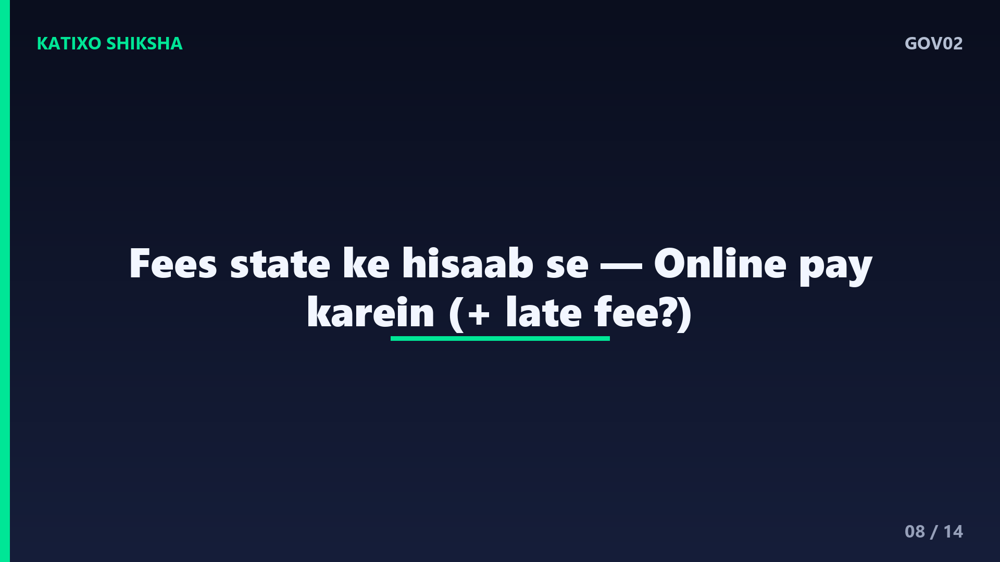
Slide 8अब बात fees और payment की। दोस्तों, DL renewal की fees राज्य के हिसाब से थोड़ी अलग हो सकती है, और अगर आप expiry के बाद late renew कर रहे हैं, तो उस पर अतिरिक्त late fee भी जुड़ सकती है। Payment आप portal पर online ही कर सकते हैं, जैसे net banking, debit या credit card, या UPI से। Payment के बाद receipt ज़रूर save करें या screenshot ले लें। exact fees समय और राज्य के साथ बदल सकती है, इसलिए सही amount हमेशा official portal पर ही देखें, किसी agent की बताई fees पर भरोसा ना करें।
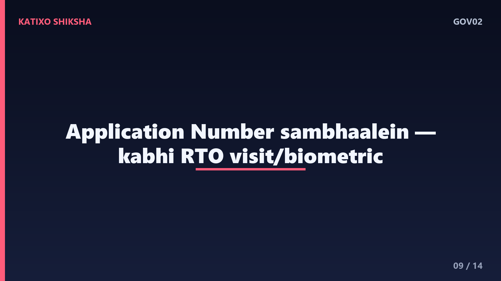
Slide 9अब समझिए payment के बाद क्या होता है। दोस्तों, fees भरने के बाद आपको एक application number या acknowledgement slip मिलती है, जिसे संभालकर रखना है, क्योंकि इसी से आप status track कर सकते हैं। कुछ राज्यों में renewal पूरी तरह online हो जाता है, तो कहीं आपको biometric या verification के लिए RTO जाना पड़ सकता है, या documents की हार्ड कॉपी दिखानी पड़ सकती है। आपके State और case के हिसाब से portal आपको बता देगा कि आगे क्या करना है। उस instruction को ध्यान से follow करें।
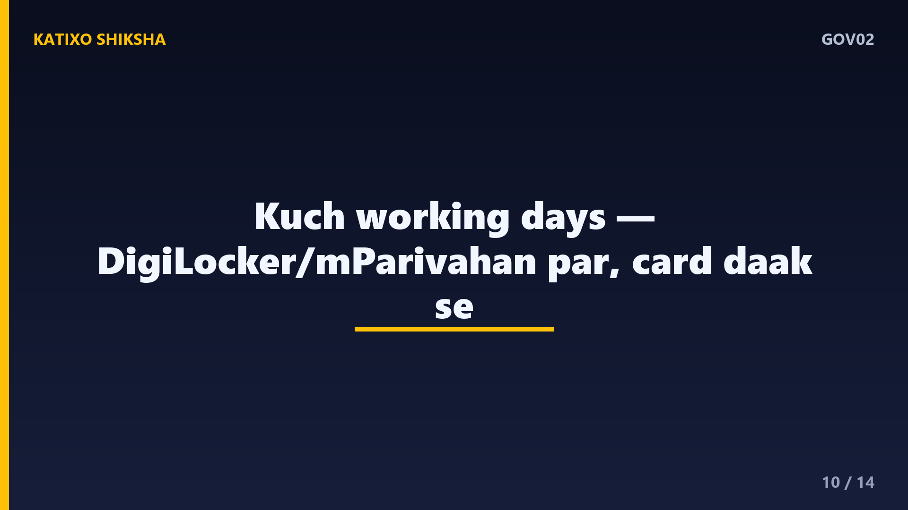
Slide 10अब timeline की बात। दोस्तों, application और verification complete होने के बाद आपका renewed Driving Licence आम तौर पर कुछ कार्य दिवसों यानी working days में process हो जाता है। कई राज्यों में आप अपने DL का digital version, DigiLocker या mParivahan app पर देख सकते हैं, जो valid माना जाता है। Physical smart card card डाक से आपके address पर अलग से आता है, जिसमें थोड़ा ज़्यादा समय लग सकता है। सही status और समय की जानकारी आप अपने application number से official portal पर check कर सकते हैं।
Slide 11अब common गलतियाँ जिनसे बचना है। पहली गलती, licence expire होने के बाद बहुत देर तक renew ना कराना, इससे late fee या दोबारा test की नौबत आ सकती है। दूसरी, गलत State चुन लेना या DL number गलत डालना। तीसरी, Form 1A medical certificate की ज़रूरत होते हुए भी ना लगाना, जब उम्र चालीस से ज़्यादा हो। चौथी, धुंधले या गलत format के documents upload करना। और पाँचवीं, किसी fake website या agent को अपनी details और पैसे देना। दोस्तों, ये छोटी गलतियाँ बड़ी देरी की वजह बनती हैं।
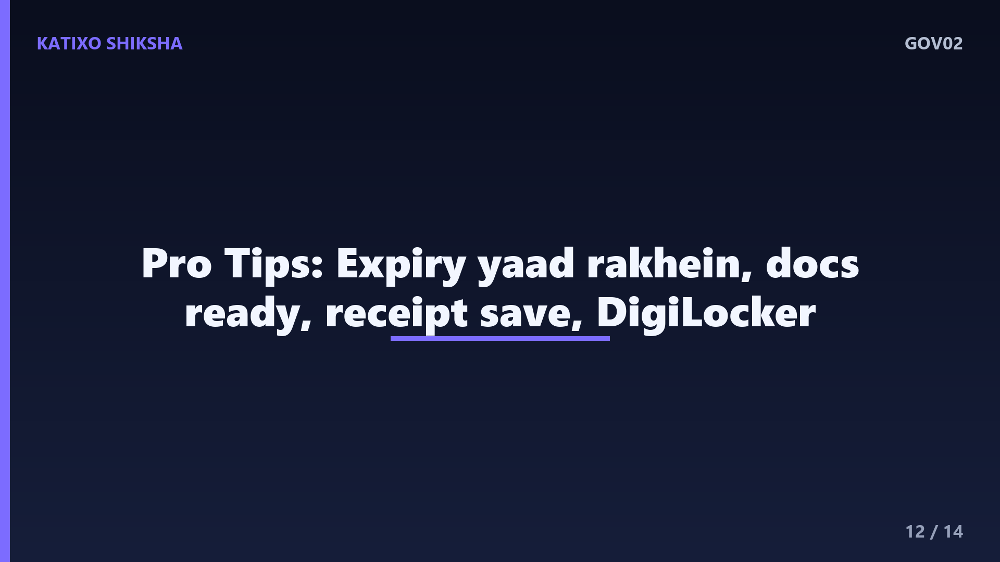
Slide 12कुछ काम की tips भी सुन लीजिए। Tip एक, अपनी licence की expiry date पहले से याद रखें और expire होने से थोड़ा पहले ही renewal शुरू कर दें। Tip दो, सारे documents पहले से scan करके सही format में तैयार रखें, ताकि upload में दिक्कत ना हो। Tip तीन, application number और payment receipt, licence बनने तक संभालकर रखें। Tip चार, अपना renewed licence DigiLocker या mParivahan पर भी रख लें, ताकि गाड़ी चलाते समय digital copy दिखा सकें। दोस्तों, थोड़ी सी तैयारी से पूरा काम smooth हो जाता है।
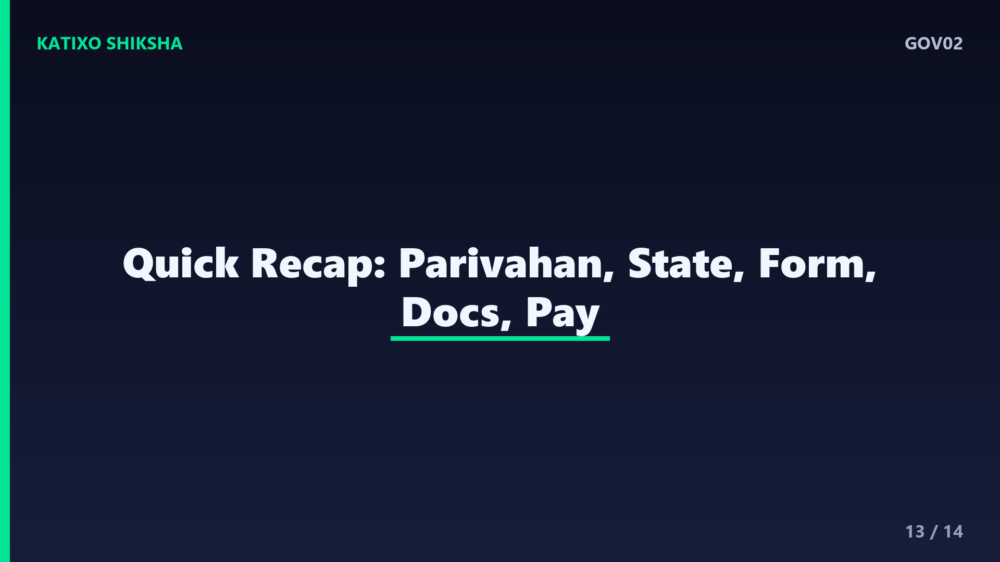
Slide 13अब एक quick recap कर लेते हैं। Driving Licence expire होने पर उस पर गाड़ी चलाना गैरकानूनी है, इसलिए समय पर renew कराएँ। Renewal के लिए official Parivahan Sarathi portal इस्तेमाल करें, अपना State चुनें, और DL Renewal service select करें। Documents में Form 1, और ज़रूरत हो तो Form 1A medical certificate लगाएँ। Fees online भरें, application number संभालें, और status track करते रहें। दोस्तों, सही जानकारी और थोड़ी सावधानी से DL renew कराना बिल्कुल आसान है।
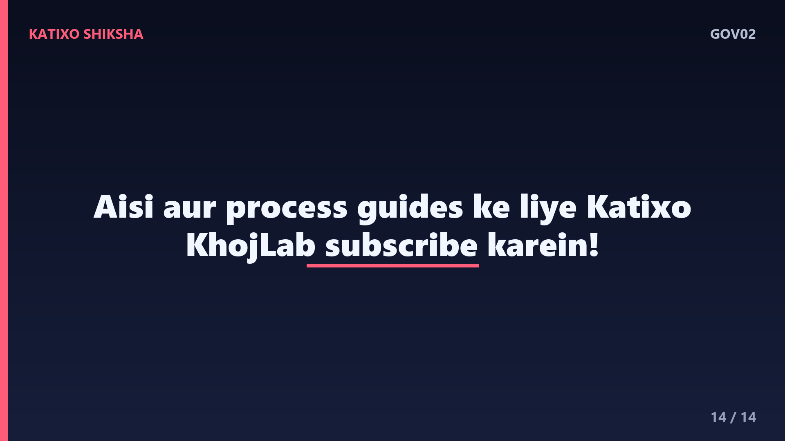
Slide 14तो दोस्तों, अब आप खुद, बिना किसी agent के, घर बैठे अपना Driving Licence online renew कर सकते हैं। बस official Parivahan Sarathi website इस्तेमाल करें, details सही भरें, और अपनी जानकारी किसी अनजान link पर कभी ना डालें। अगर ये guide आपके काम आई, तो ऐसी और काम की सरकारी process guides के लिए Katixo KhojLab subscribe करें और bell icon ज़रूर दबाएँ। एक ज़रूरी disclaimer, process और fees समय के साथ बदल सकती हैं, इसलिए apply करने से पहले official website ज़रूर check करें। मिलते हैं अगली guide में, धन्यवाद।